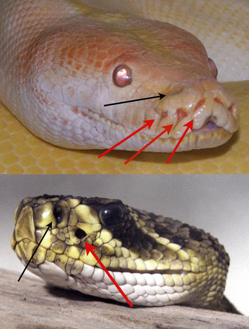

Reptilien
In Deutschland gibt es 14 heimische Reptilienarten. Dazu gehört die Schildkröte, die Blindschleiche und verschiedene Echsen und Schlangenarten. Auch im Tierheim gibt es Reptilien. Diese müssen leider oft aufgrund schlechter Haltung ihrem Besitzer weggenommen werden oder werden von diesem in Wildnis ausgesetzt. Da es sich meist um nicht-heimische Arten handelt, würden diese bei uns in der freien Wildbahn entweder nicht überleben, oder aber sie zerstören unser Ökosystem, indem sie die heimischen Arten verdrängen. Daher können diese Tiere auch nicht wieder in die Wildnis entlassen werden.

Die Blindschleiche sieht zwar aus wie eine Schlange,ist aber eine Echse! Bild von Christian Fischer , lizenziert unter CC BY-SA 4.0.
{kind=link}
Schildkröten
Der Körperbau von Schildkröten hat sich in den letzten Millionen Jahren kaum verändert. Ihr auffälligstes Merkmal ist ihr Panzer (Carapax). Dieser ist fest mit der Wirbelsäule verschmolzen und daher Teil des Skeletts. Die Ernährung von Schildkröten variiert je nach Art. Einige sind Pflanzenfresser, andere Fleischfresser oder Allesfresser. Sie fressen alles von Algen und Wasserpflanzen bis zu Insekten und kleinen Fischen. Unterscheiden kann man zwischen Landschildkröten, Wasserschildkröten, die in Flüssen, Seen und Teichen leben und Meereschildkröten.

Das Skelett einer europäischen Sumpfschildkröte (Emys orbicularis) Bild von unknown/F. A. Brockhaus - Brockhaus Kleines Konversations-Lexikon (5. Auflage 1911) , lizenziert unter PD.
{kind=link}
Echsen
Echsen und Schlangen werden in der Wissenschaft unter dem Begriff „Squamata“ zusammengefasst, was übersetzt „Schuppenkriechtiere“ bedeutet. Eidechsen können sich sehr schnell bewegen und viele Arten können sogar ihre Schwänze abwerfen, um Feinde abzulenken und zu entkommen. Ihre Haut ist ebenfalls mit Schuppen bedeckt, und sie häuten sich regelmäßig. Eidechsen ernähren sich von Insekten, kleinen Säugetieren und Pflanzen. Ein bekanntes Beispiel ist die Zauneidechse, die oft in Europa anzutreffen ist.
Ein Zauneidechsen Männchen (Lacerta agilis) Bild von böhringer friedrich, lizenziert unter CC BY SA 3.0.
{kind=link}
Schlangen
Schlangen haben keine Beine und bewegen sich durch Schlängeln fort. Ihre Haut ist mit Schuppen bedeckt, die sie regelmäßig abstreifen, um zu wachsen. Schlangen haben keinen äußeren Gehörgang, aber sie können Vibrationen im Boden spüren, um Beutetiere oder Gefahren zu erkennen. Manche Schlangen sind giftig und nutzen ihr Gift, um Beute zu töten oder sich zu verteidigen. Andere Schlangen umklammern ihre Beute bis diese erstickt, die sogenannten Würgeschlangen. Alle in Deutschland lebenden Schlangenarten sind für den Menschen jedoch ungefährlich.
Alle Reptilien haben einen gemeinsamen vierbeinigen Vorfahren, bei einigen wie den Schlangen wurden diese Beine jedoch zurückentwickelt. Trotzdem lassen sich in den früh entstandenen Schlangenarten noch Überbleibsel dieser Beine finden.
Die Überbleibsel der Hinterbeine bei einer Boa constrictor Bild von Stefan 3345 @Wikimedia, lizenziert unter CC BY SA 4.0.
Fun Facts Reptilien
Ewiges Wachstum: Viele Reptilien, wie Schildkröten und Krokodile, hören niemals auf zu wachsen. Sie wachsen ihr ganzes Leben lang, auch wenn das Wachstum mit dem Alter langsamer wird.
Lange Lebensdauer:Schildkröten sind bekannt für ihre beeindruckende Lebensdauer. Einige Arten können über 100 Jahre alt werden. Die Galapagos-Riesenschildkröte "Harriet" wurde beispielsweise etwa 175 Jahre alt!
Ungewöhnliche Sinne: Einige Schlangenarten haben ein spezielles Grubenorgan, mit dem sie Infrarotstrahlung wahrnehmen und so Wärmequellen orten können.
Mit schwarzen Pfeilen sind die Nasenlöcher markiert, die roten Pfeile zeigen auf die Öffnungen des Grubenorgans, Bild von unknown, lizenziert unter CC BY SA 4.0.
{kind=link}